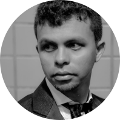

Josinaldo Júnior
- Graphic Designer
Graduado em Design Gráfico, com anos de experiência em ensino de softwares da área de design e tecnologia. Tenho facilidade para aprender novas tecnologias e transmitir o meu conhecimento de maneira clara e interativa.
Atualmente estou desbravando sistemas do Desenvolvimento Web (HTML, CSS e JavaScript) com objetivo de ser um Full Stack na área.